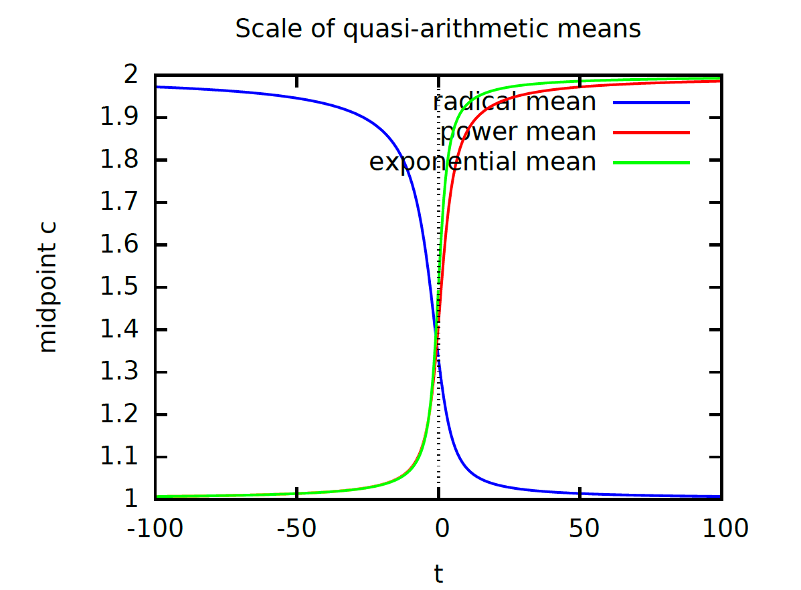

/* quasi-arithmetic exponential means form an increasing scale of means */ kill(all); fpprec:1000$ set_random_state(make_random_state(2025))$ a:-1+random (2.0); b:-1+random (2.0); minalpha:-300$ maxalpha: 300$ exponentialMean(alpha,x,y):=(1.0/alpha)*log((exp(alpha*x)+exp(alpha*y))/2.0); exponentialMean(minalpha,a,b); exponentialMean(maxalpha,a,b);
/* Radical means generates a decreasing scale of means on the positive reals */ kill(all); fpprec:30; set_random_state(make_random_state(2025))$ a:random (1.0); b:random (1.0); f(alpha,x):=alpha**(1/x); finv(alpha,x):=log(alpha)/log(x); /* quasi-arithmetic means */ qam(alpha,x,y):=finv(alpha, (f(alpha, x)+f(alpha, y))/2); qam(10**(-30),a,b)$ bfloat(%); qam(10**(30),a,b)$ bfloat(%);

(download pdf)a:1; b:2; radicalscale(beta) := beta/log( (exp(beta/a)+exp(beta/b))/2 ); exponentialscale(alpha):=(1/alpha)*log((exp(a*alpha)+exp(b*alpha))/2); powerscale(alpha):=((a**alpha+b**alpha)/2)**(1/alpha); plot2d([radicalscale(alpha),powerscale(alpha),exponentialscale(alpha)],[alpha,-20,20], [legend, "radical mean", "power mean", "exponential mean"], [xlabel, "t"], [ylabel, "midpoint c"], [title, "Scale of quasi-arithmetic means"],[pdf_file, "scalemeans-20.pdf"]);
/* Bernoulli family */ kill(all)$ BernoulliFR(p1,p2):=2*abs(asin(sqrt(p1))-asin(sqrt(p2)))$ F(theta):=log(1+exp(theta))$ theta(p):=log(p/(1-p))$ eta(p):=p$ h(u):=2*atan(exp(u/2))$ hinv(u):=2*log(tan(u/2))$ hdiamond(u):=2*asin(sqrt(u))$ hdiamondinv(u):=(sin(u/2))**2$ BernoulliFRtheta(theta1,theta2):=abs(h(theta1)-h(theta2))$ BernoulliFReta(eta1,eta2):=abs(hdiamond(eta1)-hdiamond(eta2))$ p1:random(1.0)$p2:random(1.0)$ BernoulliFR(p1,p2); BernoulliFRtheta(theta(p1),theta(p2)); BernoulliFReta(eta(p1),eta(p2)); FRcentroidTheta(t1,t2):=hinv((h(t1)+h(t2))/2)$ FRcentroidEta(e1,e2):=hdiamondinv((hdiamond(e1)+hdiamond(e2))/2)$ FRcentroidTheta(theta(p1),theta(p2))$ratsimp(%); FRcentroidEta(eta(p1),eta(p2))$ratsimp(%); p12:%$ BernoulliFR(p1,p12)$float(%);BernoulliFR(p12,p2)$float(%);